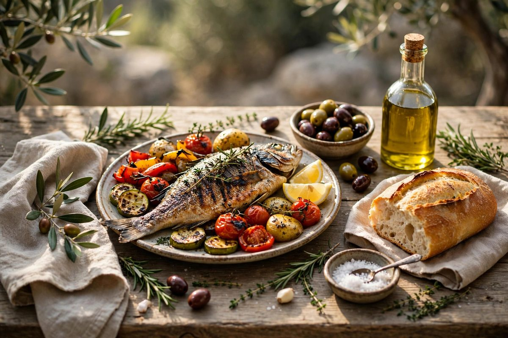

Home » Guides
Mediterranean Dinner

Mediterranean dinners are lighter than lunches and often eaten later in the evening, with family. They are built from vegetables, fish, eggs, and cheese, with bread and olive oil, and they are rarely heavy. This guide shares the classic dinner patterns and recipes, and shows how to adapt them to your own evening routine.
A lighter evening meal
In the traditional Mediterranean pattern, dinner is a smaller meal than lunch. It might be a vegetable soup with bread, an omelette with salad, grilled fish with vegetables, or a plate of cheese, olives, and bread. The idea is to eat enough to be satisfied, but not so much that you go to bed feeling heavy. This is a useful principle for modern life too: a light dinner, eaten a few hours before bed, tends to improve sleep and digestion. If you are used to a large dinner, try making lunch your main meal for a week and see how you feel.
Grilled fish and vegetables
Grilled fish is the classic Mediterranean dinner. Sea bass or sardines grilled with lemon and herbs, served with a salad and roasted vegetables, is a complete meal in twenty minutes. A vegetable grill — courgette, peppers, aubergine, and mushrooms, brushed with olive oil — works as a main dish or a side. A frittata with seasonal vegetables and cheese is another easy dinner. Keep the cooking simple: olive oil, garlic, lemon, and herbs are all the seasoning most Mediterranean dinners need.
One-pot dinners
One-pot dinners are practical for weeknights. A fish stew with tomatoes, garlic, and herbs, a chicken and vegetable traybake with lemon and potatoes, or a bean and vegetable stew with bread are all easy and satisfying. A pasta dish with vegetables and beans, served in a modest portion, is a classic weeknight dinner. These dishes use one pan, which means less washing up, and they are easy to scale up for the family. Make a double batch and freeze half for a busy night.
Eating together in the evening
Dinner is the meal most often shared in Mediterranean households, and it is a time for family and conversation. The food is served in the middle of the table, and everyone helps themselves. This style of eating — family-style, with shared dishes — encourages slower eating and better conversation. You do not need a large family to adopt it: serve dinner in dishes on the table rather than plating individual portions, put phones away, and take time over the meal. The evening meal is the anchor of the Mediterranean day.
Dinner in the Mediterranean
Dinner in the Mediterranean is a family affair, eaten late and lightly. In Spain, dinner is often eaten at nine or ten in the evening, and it is a small meal — a salad, an omelette, or a plate of cheese and bread. In Greece, dinner is similar: a light meal, shared with family, eaten slowly. In Italy, dinner is a smaller version of lunch, with a soup or a salad and a light main course. The evening meal is a time to talk about the day, to relax, and to enjoy each other's company. If you eat dinner early, the principle still applies: keep it light, share it, and take your time.
Frequently Asked Questions
What time do Mediterraneans eat dinner?
Often late by northern European standards — 8pm or 9pm in Spain and Greece, earlier in Italy. The time matters less than the pattern: a light meal, eaten slowly, with family.
Should dinner be smaller than lunch?
In the traditional pattern, yes. Lunch is the main meal and dinner is lighter. If a large dinner suits your schedule better, keep it balanced with vegetables and a modest portion.
What is a quick Mediterranean dinner?
Grilled fish with salad, an omelette with vegetables, or a vegetable soup with bread. All are ready in twenty minutes.